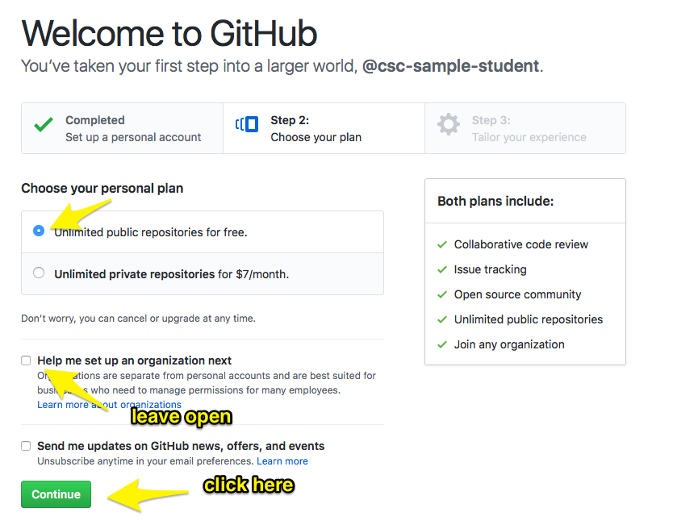
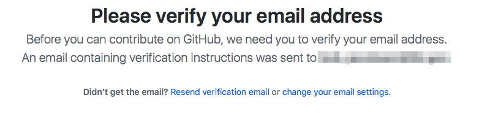
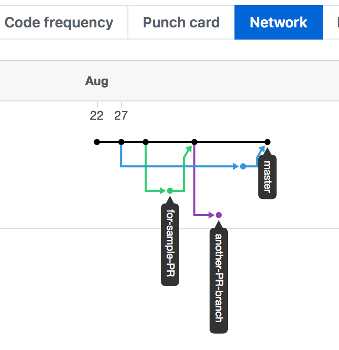
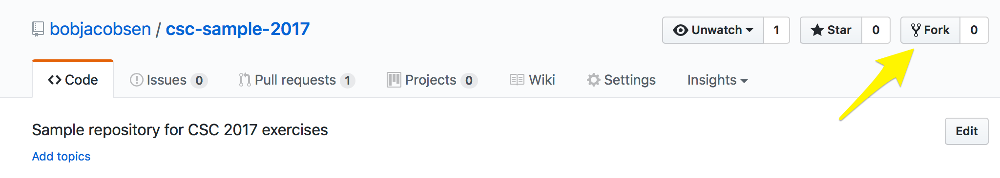
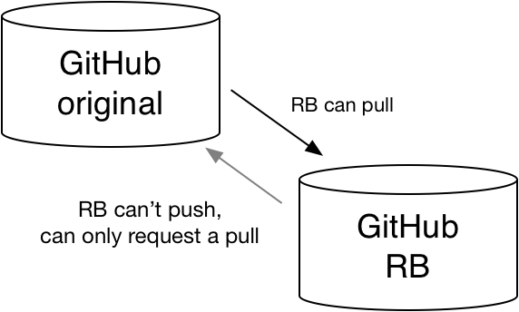
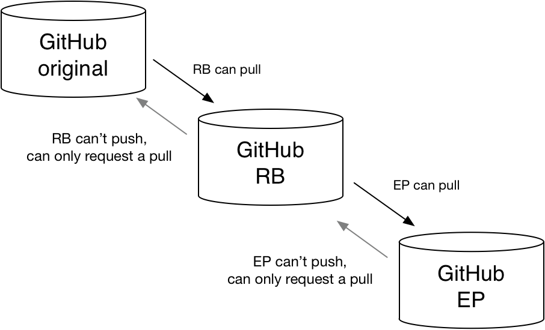
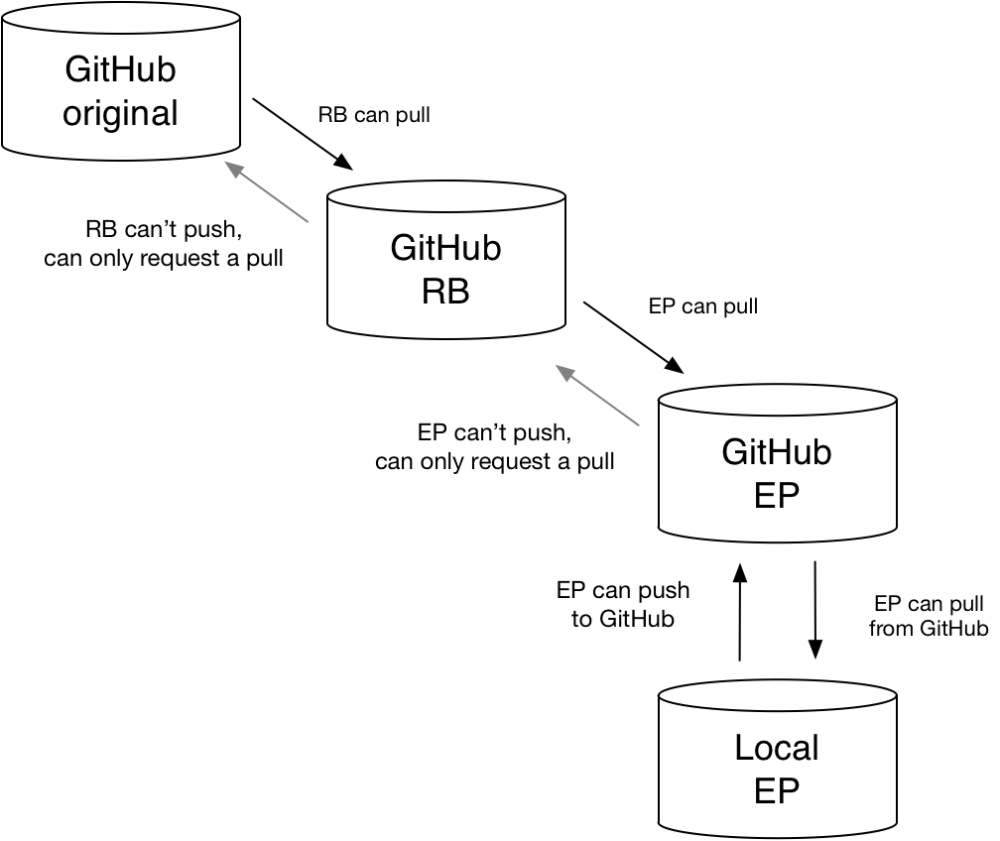
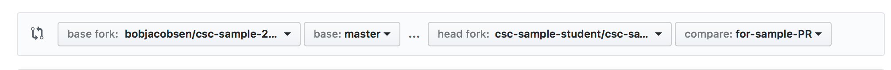

Goals:
Start by going to http://github.org. If you see a signup box, as shown below, just fill it out and click "Sign up for GitHub".
 If you don't see the box, click the "Sign Up" link in the upper right of the screen to get one.
That will take you to a details page that looks something like the image to the right. Leave "Unlimited public repositories for free" selected, and leave "Help me set up an organization next" unselected. Click "Continue".
You'll then see a questionnaire which you can fill out as you'd like. Click "Submit".
(If at some point it asks you whether you "Want to start a project", you should skip that to save time)
 GitHub will probably send you an email to verify that you're real. Once you reply to that, you have an account.
 Click around a bit to see the features. From the front page you can directly browse the code.
The Network button under Insights will show you the branch structure, similar to gitg's graphics.
But the most import feature is the support for Pull Requests (PRs). Click "Pull requests" on any screen to display those. We start with one open one, and one closed one (you can see the closed ones by clicking the "Closed" under the search bar, or removing the "is:open" search term)
If you click on the open PR, you'll get a summary that carries a lot of information. We'll go over that later.
The two of you should pick one person to be the Release Builder (RB). She'll have the main repository for the collaboration, and will gather changes to create consistent sets of code for release. The other member of the pair will be the Enthused Physicist (EP) who develops changes. (There two people will have separate GitHub accounts, which makes the following much easier to follow. It is possible to do this with one person and one account, but it's much more confusing; work with your partner!)
Now pretend that your all members of a Collaboration. The RB is responsible for code for the Thaumaturgy Engine (TE), an important system in the Collaboration's combined experiment. She'll put together consistent sets of code for that system and push them up to a central repository (our csc-sample-2017 repository). But she needs a place of her own to do that. 
To create that, she "forks" our main repository. That's just a button push: click on the word "fork" in the upper right.
 That will create a repository of the RB's very own. It will even look similar, except for having the RB's account name at the left side of the screen instead of Bob's. It really is her's: She can modify it, rename it, even destroy it.
But she can't do anything to the original repository, because she doesn't have permissions to do that. We've set up a repository structure that's aligned with the authority: She can pull changes into her repository, but can't push them upstream. Instead, she makes pull requests to get her code included in the main repository (see image to right).
Now we'll do a similar thing for the Enthused Physicist. He should sign into GitHub, then go to the RB's repository (not the original bobjacobsen/csc-sample-2017 one!) and click "Fork" there. He'll then have a repository of his own, with a similar situation regarding pull and push (see middle right). 
OK, but now what? The EP is thinking that all his tools are on his laptop: his favorite editor, cmake/make/compiler to build it, the ability to run it to test it, are now in a different place from the code. How should he work?
The last step completes that: He clones his own GitHub repository down to his laptop. (Don't forget to change the account name: You can also get an exact version to copy and paste if you click the green "clone or download" button on your repository page)
git clone https://github.com/RP-account-name/csc-sample-2017.git
 You've then got a set of linked repositories that reflects what you want to do (third image to right).
But why does the EP need that GitHub repository? Why not directly connect EP's laptop repository to RB's repository? Because the laptop isn't always there, and GitHub is. When EP requests that RB pull his latest changes, it might be some time before she acts on that request. He and his laptop might be offline at that point. By first pushing his changes to GitHub, they'll always be available. That operation also allows for a set of CI checks to be run, as we'll see next.
There are lots of ways to do this, but for this exercise we're going to use a free service called Travis.
Go to https://travis-ci.org and look for the "Sign in with GitHub" in the upper right. Click it. If you're signed in to GitHub (which you should still be), it'll present a screen requesting access to your repositories and other information. Click "Authorize Travis-CI". In a few seconds, it should take you to your profile. If it hasn't after about 10 seconds, click on your name in the upper right to get to the 'settings' screen, then to the 'profile' screen. On it you'll see sliders for any GitHub repositories you have (might be only one). Have the one for the csc-sample-2017 repository slid to show a checkmark.
EP should go to his laptop repository, and add a new file (any change is fine, but this is an easy one to see). By now you've got this and can certainly do it independently, but as a reminder the steps are:
git checkout -b some-name'
git add' to tell git about it
git commit' to put it in the local repository
All of this could have been done completely offline.
Next we push it up to EP's GitHub repository with
git push
(that defaults to the parent repository, but you could have said "git push origin" to be specific) The first time through, that might as for extra information:
The current branch another-PR-branch has no upstream branch. To push the current branch and set the remote as upstream, use
git push --set-upstream origin some-name
Just cut and paste command it recommends. The repositories are already connected, but this additional bit is needed to connect the branches inside them.
If you set Travis up properly, it's already running on that branch you just pushed up. Go to your status page at https://travis-ci.org to look. It should quickly do a complete Cmake, make and run unless your change broke something; there's a lot of status report info at the front of the log, so either collapse that or just skip to the end.
Now that they're on GitHub, anybody with access (which for a public repository is anybody; another approach that's often used to have "private" repositories restricted to an organization, but that's a topic for the collaboration to address as a whole) can see the repository and pull from it. So you can tell a colleague to "get the some-name branch from my repository and try that".
But you also want to make an orderly contribution to the collaboration's software. To do that, you send a Pull Request upstream, in this case to RP.
 On your GitHub repository page, you'll see a "new pull request" button. If it's soon enough after your push, you'll also see a status bar that references your recent change. Either of those can be used to create a pull request.
If there's a status bar with a pull-request button, just click that. It's easiest. But if not, click "new pull request" on the center-left and you'll get a place to specify what you want to do (image will vary a bit).
The left two boxes should select your RB's repository and the branch on it you want to merge to (she'll usually have already set one up for you; in this example, you can just use 'master'). The right should have your repository selected, along with your most recent branch; if not, pick the right branch.
Then click the "Create Pull Request" button.
You'll get a form for title and description, along with a summary of exactly what you're asking to be pulled. In most cases, the form be pre-filled out with the wrong info from the commit message(s) - just another reminder to write good commit messages. Fix those up. The title often appears in release notes, so make it good. Click Create Pull Request once it's active (once you've filed the form out).
And the EP is done! He's handed his change over. He can go off to create another branch and work on some other neat discovery or feature.
At this point, the RB can get email about the pull request, and can also see it on her "Pull Requests" screen. She can make comments (there are lots of cool "Markdown" features for notes, like referring to other PRs and Issues with shorthand notation, copying a note to somebody by name to make sure they hear about it, etc. See the Markdown documentation), close the PR without merging it (sometimes necessary), and do various other things. Today, the thing to do is to check that it passes CI, which will briefly say that it's running:
and then (hopefully) say that it passes:
At that point, the RB can merge the changes onto the selected branch in her repository by clicking the "Merge pull request" button. Go ahead and do that now.
A couple things can go wrong, and you might want to experiment with them by creating new PRs:
git remote add ProjectRepo https://github.com/RP-account-name/csc-sample-2017.git
The "ProjectRepo" can be any convenient name. The RB-account-name in the URL is the account name used by the RB so it's a reference to the exact repository. (In big projects, the common repositories are owned by projects and organizations, not by individual users, but we're not doing that in this example)
Once that's defined, you can fetch and merge the most recent contents via:
git pull ProjectRepo master
(or whatever branch you want to merge in) and then resolve any conflicts.
Spend some time creating PRs, accepting them, closing them, modifying them, etc to see how it all works. Try creating a conflict (using two branches) or a PR that doesn't compile or run. Get a feel for how this works.
Can you work together to make a change the effects the B-to-C interface? How would you do that? Somebody has to change B, somebody has to change C? How can you do that in a way that keeps everybody working efficiently.
How should you set up the branches?
How should you share code between the repositories?
You can PR from any repository into any other that comes from the same base repository. Since all of these (your team and theirs) are from the bobjacobsen/csc-sample-2017 base, you can all PR to each other. To do that, you select the repository you want to pull from your code in the left-most box when creating a PR:
You can also define a remote for any other repository and then pull the contents of a branch from that repository.
Talk to Bob about your proposed approach to this. He'll also hook you up with another group to work with. Then talk through your approach and their approach to decide on how the four (or more) of you want to do this. Finally, try that approach and see how it does.
One possible end state is a branch in one (or both) of the RB's repositories that has the entire change on it. It might be good to keep that off master until it's working, using other branches to allow master to still work for other people. Once you have that, one of your team can send it up to the original repository via a PR to there. That'll deliver it to the entire Collaboration, a success for your team!
{kind=link}
{kind=link}
{kind=link}
{kind=link}
{kind=link}
{kind=link}
{kind=link}
{kind=link}
{kind=link}
{kind=link}
{kind=link}